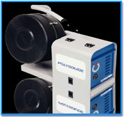

-
Tocar imagen para detallesTS 25
-
Tocar imagen para detalles
 TS 34Para materiales altamente oxidables.
TS 34Para materiales altamente oxidables.on su cámara de purga de gas, el cabezal esta precisamente diseñado para la soldadura de titanio, inconel y todos los materiales sensibles a la oxidación. El cabezal de soldadura es centrado y fijado en el interior del tubo a ser soldado por medio de un mandril de expansión. Durante la soldadura el cuerpo del cabezal permanece estacionario mientras la antorcha rota alrededor del tubo.
Soldaduras TIG / GTAW de uniones tubo a placa-tubo ( I.D. desde 9,5 mm (0,4”) a O.D. 33,7 mm (1-1/3”)).
-
Tocar imagen para detallesTS 2000Particularmente diseñado para aplicaciones de alta exigencia de ciclo de trabajo.
Cabezal abierto diseñado para tubos al ras, sobresaliente o retraído. El cabezal de soldadura es introducido y centrado en el tubo a soldar por medio de un mandril de centrado. Durante la soldadura el cuerpo del cabezal permanece estacionario mientras la antorcha rota alrededor del tubo.
Soldaduras TIG / GTAW de uniones tubo a placa-tubo con aporte de alambre frío ( I.D. desde 10 mm (0,50”) a O.D. 60 mm (2,40”)).
-
Tocar imagen para detallesPolyfil - 3Alimentador de alambre montado en piso.
Alimentador de alambre para soldadura con alambre de aporte.
Alimentador TIG / GTAW de alambre de aporte frío.
-
Tocar imagen para detallesSistemas de Purga para Regular el Flujo de Gas
Los sistemas de purga son usados para confinar el volumen de purga dentro de los tubos. Ellos analizan la cantidad de gas que esta siendo usado y pueden regular el flujo proporcionalmente. Esto es una operación esencial, particularmente en acero inoxidable, antes de iniciar la soldadura. Para alcanzar una soldadura óptima, las características de los sistemas de soldadura deben ser:
- control de flujo del el gas suministrado.
- configuración modular para suplir requerimientos especiales.
- mezcla gaseosa de 2 o 3 gases electrónicamente controlada.
- ahorros de gas.
Enriva S.A. provee equipos y accesorios que se adaptan a la soldadura orbital.
-
Tocar imagen para detallesIndicadores de Oxígeno para Altas Cantidades de Soldadura
Los sistemas de purga son usados para confinar el volumen de purga dentro de los tubos. Ellos analizan la cantidad de gas que esta siendo usado y pueden regular el flujo proporcionalmente. Esto es una operación esencial, particularmente en acero inoxidable, antes de iniciar la soldadura. Para alcanzar una soldadura óptima, las características de los sistemas de soldadura deben ser:
- amplio rango de medición.
- alta confiabilidad y precisión y corto tiempo de respuesta.
- auto diagnóstico con alarma de salida.
- calibración preprogramada para gas inerte y mezclas de 2%, 5% y 10% H2.
Endriva S.A. provee equipos que pueden conectarse mediante interfase a los controles de soldadura NC Polysoude adaptados así a los requerimientos especiales en las industrias de alta pureza.
-
Tocar imagen para detallesMaquinas Afiladoras de Tungsteno para Mantener una Forma Constante del Arco de Soldadura
El estado del afilado del tungsteno es esencial antes de iniciar un proceso de soldadura automática (particularmente el corte y refrentado del tungsteno). Esta operación se hace para controlar el ángulo de soldadura y para proporcionar una completa y precisa preparación del electrodo. Para trabajar con alta precisión, el soldador debe contar con las siguientes características de la máquina de afilado:
- la más alta precisión del ángulo.
- posibilidad de cortar longitudes incluso < 10 mm.
- afilado en diferentes ángulos y para diferentes diámetros de electrodos.
Enriva, S.A. provee equipos y accesorios que se adaptan a la soldadura orbital.
-
Tocar imagen para detallesElectrodos Afilados para Mantener una Calidad Constante de la Soldadura
Los electrodos afilados son cortados a una longitud específica. Estos son definidos de acuerdo a:
- tipo de cabeza de soldadura.
- diámetro del tubo.
- diámetro del electrodo / corriente de soldadura.
- ángulo de afilado si es diferente de 30º.
Enriva, S.A. provee equipos y accesorios que se adaptan a la soldadura orbital.
Con su cámara de purga de gas, el cabezal esta precisamente diseñado para la soldadura de titanio, inconel y todos los materiales sensibles a la oxidación. El cabezal de soldadura es centrado y fijado en el interior del tubo a ser soldado por medio de un mandril de expansión. Durante la soldadura el cuerpo del cabezal permanece estacionario mientras la antorcha rota alrededor del tubo.
Soldaduras TIG / GTAW de uniones tubo a placa-tubo ( I.D. desde 10 mm (0,4”) a O.D. 25 mm (1”)).